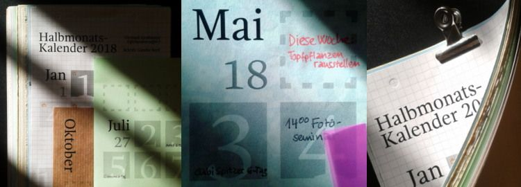

Auf dieser Website ist Platz für das, wofür mein Twitterprofil @charakterziffer nicht ausreicht. Mein Blog ist als Plus zu meinen Tweets gedacht, eben „@cz+“. // Die letzten drei Artikel:
Zugegeben, es erfordert Übung und braucht eine gewisse Gewohnheit, bis man bei meinem Kalenderdesign erkennt, welcher Tag nun ein Dienstag und welcher ein Samstag ist. Dafür vereint mein Halbmonatskalender (HMK) andere Vorteile, die ich noch bei keiner anderen Gestaltung gefunden habe:
ausreichend Platz für tägliche Termine. In meinem HMK sind es rund 7,8 cm², was mir für drei bis vier Anmerkungen pro Tag reicht.
große Zahlen, die man aus einer gewissen Entfernung erkennen kann
Kalendarium mit Überblick, so dass man zwei bis drei Wochen gleichzeitig überblicken kann.
trotzdem platzsparend in der praktischen Größe DIN A5. So passt mein HMK in die kleine Nische neben meinem Arbeitsplatz.
ansprechend gestaltet, also nicht nach Standard-Vorlage in der völlig überbeanspruchten Schrift Helvetica.
Bei mir sind Ziffern und Monatsnamen dieses Jahr in Gandhi Serif gesetzt, die ich auch in meinem Artikel über Serifenschriften vorstelle. Das grundsätzliche Design wurde seit 2012 nur behutsam angepasst.

Nach dem Herunterladen das PDF auf zwölf A4-Seiten ausdrucken, auf Wunsch jedes Blatt halbieren, sortieren und die Einzelblätter zusammenheften. Ich nutze dafür eine praktische Vielzweckklammer („Foldback-Klammer“). Alternativ im Copy-Shop mit einer Spirale binden lassen – mit einer gebogenen Büroklammer als Aufhängung –, die Blätter an der oberen Kante leicht zusammenleimen oder einfach jede Seite mittig lochen und alles an einen Nagel hängen.
Übrigens freue ich mich sehr, wenn mein mein Halbmonatskalender empfohlen und weiterverbreitet wird. Zu diesem Zweck steht er unter einer Creative-Commons-Lizenz mit Namensnennung, nicht kommerzieller Nutzung und Weitergabe unter gleichen Bedingungen (CC BY-NC-SA). Falls jemand den Kalender bearbeiten möchte (zum Beispiel die optionalen Feiertage aufs eigene Bundesland anpassen), verschicke ich gerne die SVG-Dateien. Bitte mich einfach kurz anschreiben oder kommentieren.
Es gibt Bücher, die ich lesen möchte, weil sie literarisch eine gewisse Bedeutung haben (z. B. Ecos „Der Name der Rose“ oder Goethes „Faust“). Allerdings sind darunter einige, die … sagen wir: weniger zugänglich sind und für die ich eine gewisse Motivation brauche. Für genau diese Fälle habe ich mir eine Lesepartnerin gesucht.
Derzeit lese ich mit einer Freundin den Roman „Ulysses“ von James Joyce. Die Geschichte spielt am 16. Juni 1904, wo der Leser die Hauptfiguren in 18 Episoden durch Dublin begleitet. Der Text ist sehr assoziativ geschrieben, springt gelegentlich unvermittelt, wagt sprachliche Experimente und die Handlung ist leider nicht gerade spannend. Dafür gibt es sehr viele Zitate und Anspielungen, die zu recherchieren dank Websites wie http://m.joyceproject.com/ großes Vergnügen bereitet.
Notizen im Buch
Natürlich motiviert es schon, sich gemeinsam über ein Buch unterhalten zu können und es zeitgleich zu entdecken. Meine Lesefreundin und ich verwenden zusätzlich aber noch einen Bleistift. Während einer von uns in dem Buch liest, schreibt er zu auffälligen Textstellen kurze Kommentare an den Rand oder unterstreicht etwas:
Das können besonders schöne Ausdrücke sein, unklare Formulierungen, Quellen zu Zitaten, eigene Gedanken, Lob für den Autor, Querverweise im Buch, inhaltliche Zusammenfassungen, Bewertungen des vorangegangenen Kapitels … Kurz gesagt: alles, was uns beim Lesen auffällt oder für den anderen interessant sein könnte. Oft finden wir unterschiedliche Textstellen beachtenswert oder stellen uns Fragen, zu denen der andere vielleicht einen Gedanken beisteuern kann.
Weil wir das gleiche Exemplar von „Ulysses“ verwenden, sehen wir die Kommentare des anderen. Wir lesen abwechselnd so, dass man immer einen Teil dessen liest, was der andere schon kommentiert hat, sowie im nächsten Abschnitt selbst derjenige ist, der zum ersten Mal kommentiert. Unsere Leseportionen sind praktisch ineinander verschränkt. Etwa einmal im Monat treffen wir uns dann, übergeben das Buch und tauschen uns darüber aus (wobei einer immer schon ein Stückchen weitergelesen hat).
Was eignet sich als abwechselnde Lektüre?
Es gibt einige Bedingungen für ein gutes „Wechselbuch“, das man mit dem Bleistift lesen möchte. Für die wichtigste Eigenschaft halte ich, dass die Geschichte mehr oder weniger episodisch aufgebaut ist. Wir hatten schon „Mister Aufziehvogel“ von Haruki Murakami als Wechselbuch gelesen, aber das hat nicht so gut geklappt. Ich wollte immer gleich wissen, wie es weitergeht, statt das Buch für einen Monat wegzugeben. Nach einem Wechsel war es auch nicht so leicht, wieder in die Geschichte einzusteigen (Inhaltsnotizen nach dem vorigen Kapitel haben geholfen). Vielleicht muss ein gutes Wechselbuch also tatsächlich ein bisschen langweilig sein …
Außerdem sollte das gewählte Buch schon einen gewissen Umfang haben. Wenn man nach zwei, drei Wechseln damit durch ist, ergeben sich meiner Meinung nach zu wenig Überschneidungen, in denen man die Kommentare des anderen genießen kann. Mit „In Swanns Welt“, dem ersten Band von Marcel Prousts Werks „Auf der Suche nach der verlorenen Zeit“, hat das recht gut geklappt. Das Buch hatte über 500 Seiten und mit einzelnen Leseportionen von ca. 120 Seiten haben wir gemeinsam gut 10 Monate gebraucht.
Zugegebenermaßen dauert es um einiges länger, ein Buch abwechselnd mit dem Bleistift zu lesen (für „Ulysses“ werden wir mehr als ein Jahr brauchen). Es besteht zudem die Gefahr, zwischendurch den Faden zu verlieren. Ein Wechselbuch ermutigt aber zu einer intensiven Lektüre und die Kommentare des anderen motivieren jedes Mal neu einzusteigen. Für eher sperrige Bücher, die man trotzdem gerne lesen möchte, ist so eine Bleistiftlektüre gemeinsam mit einem Lesepartner in meinen Augen eine wunderbare Sache.
Ein Bekannter hat mich gestern in einer Kurznachricht gebeten, seinen Verein zu unterstützen, die AIDS-Hilfe Wuppertal. Eine große Bank macht noch bis 7. November eine bundesweite Aktion, bei der sie tausend Vereinen jeweils 1000 € spendet. Es gibt je nach Vereinsgröße fünf Kategorien, in denen jeweils die 200 Höchstplatzierten die Spende erhalten. Alles, was der Verein tun muss ist, sich zu registrieren und Stimmen für sich zu sammeln.
Ich bin nicht ganz sicher, was ich von der Aktion halten soll. Natürlich, wer könnte etwas dagegen haben, dass Vereine mit einer Geldspende unterstützt werden? Andererseits ist das auch eine sehr offensichtliche Werbeaktion für die Bank. Sie spart sich, eine vergleichbare oder deutlich höhere Summe in eine bundesweite Kampagne zu stecken – und entlohnt somit keine Fotografen, Mediendesigner, Werbetexter und andere Kreativberufe (hab ich erwähnt, dass ich in der Medienbranche arbeite?).
Mehrere Tausend werben für die Bank
Stattdessen lässt die Bank die Vereine (zum überwiegenden Teil) kostenlos für sich arbeiten. Die Engagierten im Verein schreiben Freunde und Bekannte per Mail oder über Social Media an, weisen auf die Aktion hin, bitten um Stimmen und machen dabei auch immer Werbung für die Aktion, die der Bank das positive Image eines sozialen Wohltäters beschert (gerechtfertigt oder auch nicht).
Praktisch entsteht dabei unter den Vereinen eine Konkurrenz um Aufmerksamkeit, was ich für sehr kontraproduktiv halte. Statt gegeneinander zu agieren, sollten sich Vereine vernetzen und sehen, wie sie sich gegenseitig unterstützen können. Eine Aktion, die das fördert, wäre wirklich hilfreich.
Zum dritten werden mit höherer Wahrscheinlichkeit diejenigen Vereine „eine Spende gewinnen“, die sowieso schon eine breite Unterstützerbasis haben. Es zählt die Popularität. Hoffentlich sind das dann auch die Vereine, die wirklich gesellschaftliche Relevanz besitzen und mit dem Geld die beste positive Wirkung für unser Zusammenleben erreichen können. Im Augenblick liegen in den fünf Größen-Kategorien offensichtlich besonders Tierschutz- und Sportvereine recht weit vorne, daneben Tanz- und Musikgruppen.
Übrigens: Letztendlich habe ich meine Stimme trotzdem für den Verein meines Bekannten abgegeben. Werbung für die Bank mache ich hier aber nicht.
Das Wort kombiniert Persönlichkeit (Charakter) mit Sachlichem (Ziffer). Zusammengesetzt ergibt sich ein Synonym für Mediävalziffer, eine Zahlenvariante mit Ober- und Unterlängen.
Schriftarten dieses Blogs
Wenn dein Browser eingebettete Schriften (WOFF/WOFF2) unterstützt, dann liest du die Fließtexte hier in der Source Sans Pro von Paul D. Hunt, erschienen 2012 bei Adobe.
Die Überschriften sind aus der czSlab gesetzt, die ich für dieses Blog gestaltet habe. Sie orientiert sich an Yanones viel ausgefeilterer Antithesis von 2014.
§1 Die Verwendung meiner Kontaktdaten zur gewerblichen Werbung ist ausdrücklich nicht erwünscht; ich widerspreche hiermit jeder kommerziellen Verwendung und Weitergabe meiner Daten. // Private Fanpost ist allerdings sehr willkommen!
§2 Dieses Blog verlinkt auf Websites Dritter („externe Links“). Zum Zeitpunkt der erstmaligen Verlinkung waren dort keine Rechtsverstöße ersichtlich. Da ich keinen Einfluss auf fremde Websites habe, kann ich für deren Inhalte und Gestaltung keine Haftung übernehmen. Sollte ich von Rechtsverstößen erfahren, entferne ich die Verlinkung unverzüglich. Eine ständige Kontrolle der externen Links ist ohne konkrete Hinweise aber nicht zumutbar.
 @charak
@charak